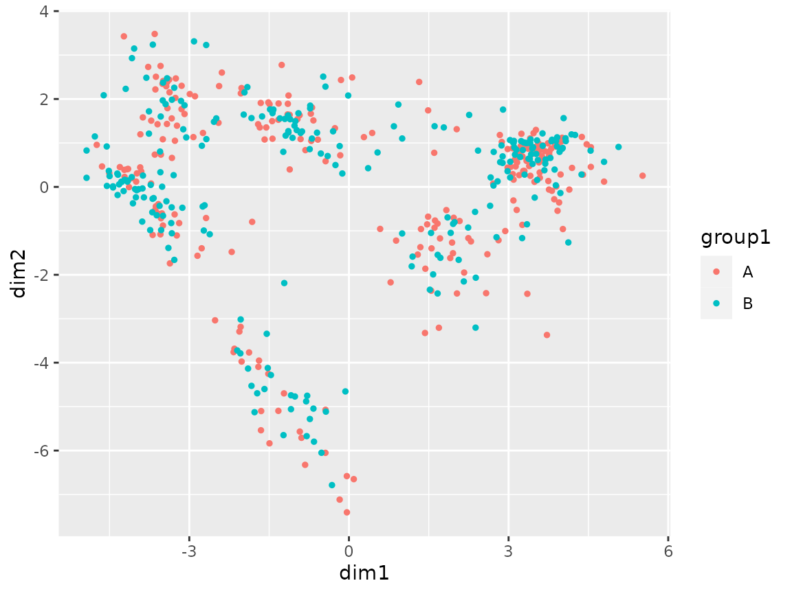
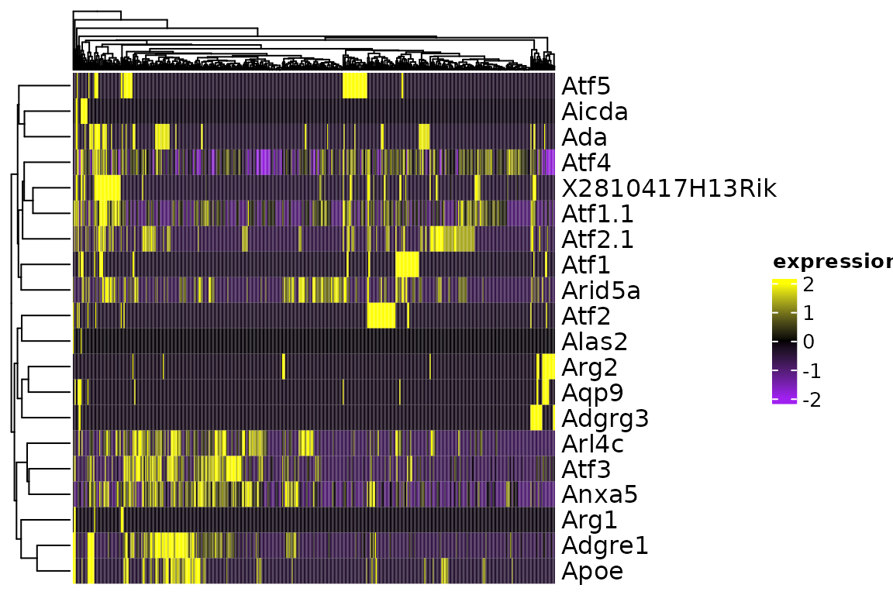
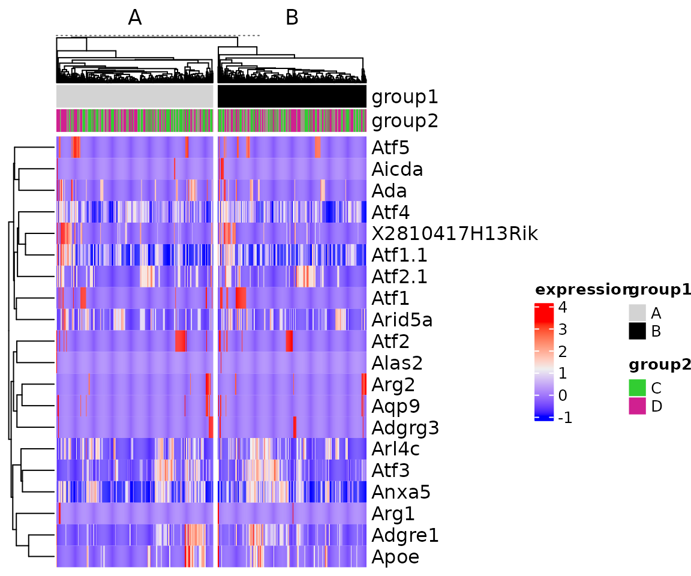

Installation
You can install the release version of scmisc from Github with:
remotes::install_github("ddiez/scmisc")Toy dataset
This toy dataset contains 493 cells from mice in a SingleCellExperiment object.
sce
#> class: SingleCellExperiment
#> dim: 434 493
#> metadata(0):
#> assays(2): counts logcounts
#> rownames(434): X2810417H13Rik Ada ... Zfp36l2 Zfp36
#> rowData names(4): id symbol accession note
#> colnames(493): S00001_274363 S00001_323404 ... S00001_843408
#> S00001_270588
#> colData names(3): samplename filename cell_index
#> reducedDimNames(0):
#> mainExpName: NULL
#> altExpNames(0):We can create some grouping variables.
Plots
There are several plotting functions that work with Seurat and SingleCellExperiment objects.
Scatter plot
plot_coord(sce)
plot_coord(sce, color = "group1")
plot_coord(sce, color = "group2")Expand by grouping variable.
plot_coord(sce, expand = "group1")
plot_coord(sce, expand = c("group1", "group2"))Heatmap
The function plot_heatmap is a wrapper around ComplexHeatmap::Heatmap that simplifies plotting SingleCellExperiment and Seurat objects.
plot_heatmap(sce[1:20, ])We can use ComplexHeatmap advance annotation features with the heatmap by passing them directly.
cols <- circlize::colorRamp2(c(-2, 0, 2), c("purple", "black", "yellow"))
plot_heatmap(sce[1:20, ], col = cols)
plot_heatmap(sce[1:20, ], column_split = sce$group1)
For column annotations we can directly pass the variable names to use with the color specification using top_ann and top_ann_col.
col <- list(group1 = c(A = "lightgrey", B = "black"),
group2 = c("C" = "limegreen", "D" = "violetred"))
plot_heatmap(sce[1:20, ], column_split = sce$group1, top_ann = c("group1", "group2"), top_ann_col = col)